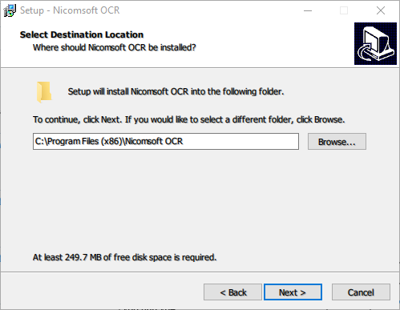

Since version 7.0, PDF Focus .Net can work with OCR. To perform OCR we'll use free OCR library by Nicomsoft (https://www.nicomsoft.com/products/ocr/download/).
The library is freeware and can be used in commercial application.
Important note. We guarantee, this code example will work with the NicomSoft OCR version 7.0.
If you downloaded version 6.X or 7.1 - perhaps, it may not work! We are making every effort to update our engine and ensure, that it works for all versions of the NicomSoft OCR.

Notice: Please make sure, that you have installed this package (Nicomsoft OCR SDK) on your computer.
And also, when creating your solution, you must place the file "NSOCR.cs" from C:\Program Files (x86)\Nicomsoft OCR\Samples in the directory of your solution.
After copying "NSOCR.cs", there will be no errors with the "using NSOCR_NameSpace". In some cases, you need to reboot your PC (Server.)
IMPORTANT: PDF Focus .Net supports OCR since version 7.0.
Please download the latest version from our website:
https://www.sautinsoft.com/products/pdf-focus/download.php